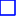

<!doctype html>
<html lang="en">
    <head>
        <meta charset="utf-8">
        <meta http-equiv="X-UA-Compatible" content="IE=edge">
        <meta name="viewport" content="initial-scale=1,user-scalable=no,maximum-scale=1,width=device-width">
        <meta name="mobile-web-app-capable" content="yes">
        <meta name="apple-mobile-web-app-capable" content="yes">
        <title>RMP 2015 Planning Districts</title>
        <link rel="stylesheet" href="css/leaflet.css"><link rel="stylesheet" href="css/L.Control.Locate.min.css">
        <link rel="stylesheet" href="css/qgis2web.css"><link rel="stylesheet" href="css/fontawesome-all.min.css">
        <link rel="stylesheet" href="css/leaflet-search.css">
        <link rel="stylesheet" href="css/leaflet-control-geocoder.Geocoder.css">
        <style>
        html, body, #map {
            width: 100%;
            height: 100%;
            padding: 0;
            margin: 0;
        }
.info { padding: 6px 8px; font: 14px/16px Arial, Helvetica, sans-serif; background: white; background: rgba(255,255,255,0.8); box-shadow: 0 0 15px rgba(0,0,0,0.2); border-radius: 5px; } .info h4 { margin: 0 0 5px; color: #777; }
        </style>
        <title></title>
    </head>
    <body>
        <div id="map">
        </div>
        <script src="js/qgis2web_expressions.js"></script>
        <script src="js/leaflet.js"></script><script src="js/L.Control.Locate.min.js"></script>
        <script src="js/leaflet.rotatedMarker.js"></script>
        <script src="js/leaflet.pattern.js"></script>
        <script src="js/leaflet-hash.js"></script>
        <script src="js/Autolinker.min.js"></script>
        <script src="js/rbush.min.js"></script>
        <script src="js/labelgun.min.js"></script>
        <script src="js/labels.js"></script>
        <script src="js/leaflet-control-geocoder.Geocoder.js"></script>
        <script src="js/leaflet-search.js"></script>
        <script src="js/pdjson_0.js"></script>
        <script>
        var map = L.map('map', {
            zoomControl:true, maxZoom:21, minZoom:1
        })
        var hash = new L.Hash(map);
        map.attributionControl.setPrefix('<a href="https://leafletjs.com" title="A JS library for interactive maps">Leaflet</a> &middot; <a href="https://openstreetmap.org">OpenStreetMap</a>');
	L.control.locate({locateOptions: {maxZoom: 19}}).addTo(map);
        var bounds_group = new L.featureGroup([]);
        function setBounds() {
            if (bounds_group.getLayers().length) {
                map.fitBounds(bounds_group.getBounds());
            }
        }
        function pop_pdjson_0(feature, layer) {
            var popupContent = '<table>\
                    <tr>\
                        <th scope="row">PD_No_Nm</th>\
                        <td>' + (feature.properties['PD_No_Nm'] !== null ? Autolinker.link(String(feature.properties['PD_No_Nm'])) : '') + '</td>\
                    </tr>\
                </table>';
            layer.bindPopup(popupContent, {maxHeight: 400});
        }

        function style_pdjson_0_0() {
            return {
                pane: 'pane_pdjson_0',
                opacity: 1,
                color: 'rgba(1,13,255,1.0)',
                dashArray: '',
                lineCap: 'square',
                lineJoin: 'bevel',
                weight: 1.0,
                fillOpacity: 0,
                interactive: true,
            }
        }
        map.createPane('pane_pdjson_0');
        map.getPane('pane_pdjson_0').style.zIndex = 400;
        map.getPane('pane_pdjson_0').style['mix-blend-mode'] = 'normal';
        var layer_pdjson_0 = new L.geoJson(json_pdjson_0, {
            attribution: '',
            interactive: true,
            dataVar: 'json_pdjson_0',
            layerName: 'layer_pdjson_0',
            pane: 'pane_pdjson_0',
            onEachFeature: pop_pdjson_0,
            style: style_pdjson_0_0,
        });
        bounds_group.addLayer(layer_pdjson_0);
        map.addLayer(layer_pdjson_0);
        var osmGeocoder = new L.Control.Geocoder({
            collapsed: true,
            position: 'topleft',
            text: 'Search',
            title: 'Testing'
        }).addTo(map);
        document.getElementsByClassName('leaflet-control-geocoder-icon')[0]
        .className += ' fa fa-search';
        document.getElementsByClassName('leaflet-control-geocoder-icon')[0]
        .title += 'Search for a place';
	var legend = L.control();
	legend.onAdd = function (map) {
		div = L.DomUtil.create( 'div', 'info legend' );
		div.innerHTML = '<h4><b>RMP 2015</b></h4>' +  ('Planning Districts');
		return div;
	};
	legend.addTo(map);
        var OpenStreetMap =
          L.tileLayer('https://tile.openstreetmap.org/{z}/{x}/{y}.png', {
            attribution: '<a href="https://openstreetmap.org">OpenStreetMap</a>',
            maxZoom: 19
          })
        map.addLayer(OpenStreetMap);

var baseMaps = {'OpenStreetMap': OpenStreetMap
        };
        L.control.layers(baseMaps,{' Planning Districts': layer_pdjson_0,}).addTo(map);
        setBounds();
        var i = 0;
        layer_pdjson_0.eachLayer(function(layer) {
            var context = {
                feature: layer.feature,
                variables: {}
            };
            layer.bindTooltip((layer.feature.properties['PD_No_Nm'] !== null?String('<div style="color: #000000; font-size: 10pt; font-family: \'MS Shell Dlg 2\', sans-serif;">' + layer.feature.properties['PD_No_Nm']) + '</div>':''), {permanent: true, offset: [-0, -16], className: 'css_pdjson_0'});
            labels.push(layer);
            totalMarkers += 1;
              layer.added = true;
              addLabel(layer, i);
              i++;
        });
        map.addControl(new L.Control.Search({
            layer: layer_pdjson_0,
            initial: false,
            hideMarkerOnCollapse: true,
            propertyName: 'PD_No_Nm'}));
        document.getElementsByClassName('search-button')[0].className +=
         ' fa fa-binoculars';
        resetLabels([layer_pdjson_0]);
        map.on("zoomend", function(){
            resetLabels([layer_pdjson_0]);
        });
        map.on("layeradd", function(){
            resetLabels([layer_pdjson_0]);
        });
        map.on("layerremove", function(){
            resetLabels([layer_pdjson_0]);
        });
        </script>
    </body>
</html>
